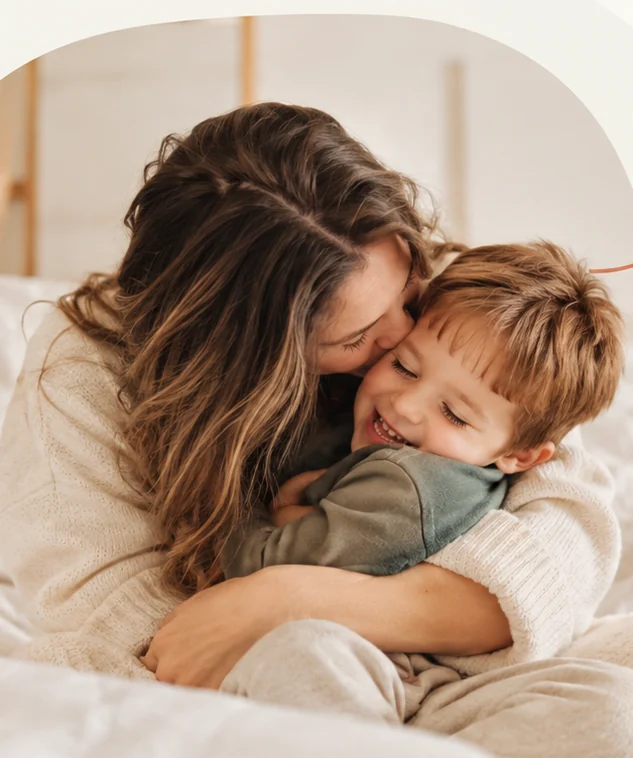
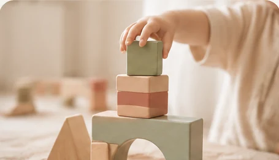

״כאן תופיע המלצה אמיתית של הורה, לאחר קבלת אישור מפורש להצגתה באתר.״
המלצה תתווסף בהמשךתוכן לדוגמה בלבד
הורות מביאה איתה רגעים של אהבה ושמחה, אבל גם שאלות, תסכולים ואתגרים. אני כאן כדי לעזור לכם להבין את הצרכים שמאחורי ההתנהגות, למצוא כלים שמתאימים למשפחה שלכם ולבנות קשר קרוב ובטוח עם ילדיכם.
אני מלווה הורים במעברים של החיים — מהרגעים המרגשים ועד לאתגרים המורכבים. מתוך אמונה שכל משפחה יכולה למצוא את הדרך שלה, עם הבנה, הקשבה וכלים שמתאימים לה.
אני עובדת סוציאלית בעלת תואר שני ומדריכת הורים מוסמכת מטעם מכון אדלר. בעבודתי אני משלבת גישות מעולמות הדרכת ההורים והטיפול הרגשי, עם התמחות בגיל הרך (0–6) ובליווי משפחות לילדים על הרצף האוטיסטי.
בקליניקה בקריית אונו אני מציעה מקום בטוח לשאלות, להתבוננות ולבניית דרך משותפת.

הורות לילד על הרצף האוטיסטי יכולה לעורר שאלות ואתגרים ייחודיים. אני מלווה הורים בגישה רגישה ומכבדת, המשלבת ידע מקצועי, הבנה התפתחותית וכלים מעשיים מתוך הקשבה לצרכים של כל ילד ומשפחה.
תהליך אישי, קשוב ומותאם לצרכים של המשפחה שלכם.
שיחת היכרות קצרה, ללא עלות, שבה נכיר ונבין מה הביא אתכם לפנות.
נקדיש מקום לסיפור המשפחתי, לאתגרים, לכוחות ולמה שחשוב לכם.
נגבש יחד מטרות וכלים מעשיים שמתאימים למשפחה וליומיום שלכם.
נלווה את היישום, נתבונן בשינויים ונדייק את הדרך לאורך התהליך.
שיחת ההיכרות הראשונית ללא עלות
מקום לסיפורים אמיתיים של משפחות שליוויתי.
״כאן תופיע המלצה אמיתית של הורה, לאחר קבלת אישור מפורש להצגתה באתר.״
״כאן תופיע המלצה אמיתית של הורה, לאחר קבלת אישור מפורש להצגתה באתר.״
״כאן תופיע המלצה אמיתית של הורה, לאחר קבלת אישור מפורש להצגתה באתר.״
מאמרים, מחשבות וכלים שיעזרו לכם להבין, להתמודד וליהנות יותר מהדרך.
הקשר נבנה דווקא ברגעים הקטנים: נוכחות, הקשבה ותגובה לצורך שמתחת להתנהגות.
לקריאת המאמר
מה קורה לילד בזמן סערה רגשית, ואיך אפשר להיות לידו באופן שמרגיע ולא מסלים.
לקריאת המאמרמבט רגשי ומעשי על השינה בגיל הרך ועל הדרכים ליצור שגרה בטוחה ומרגיעה.
לקריאת המאמרריכזתי כאן תשובות לשאלות נפוצות, כדי לעזור לכם להבין איך התהליך עובד ומה עשוי להתאים למשפחה שלכם.
מוזמנים להשאיר פרטים ואחזור אליכם בהקדם לתיאום שיחת היכרות ללא עלות.
אפשר ליצור קשר גם בטלפון, במייל או בוואטסאפ — בדרך שנוחה לכם.